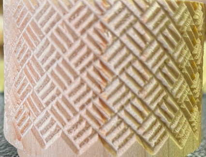

| This still untested |

Basket Weave Pattern
Purpose
This program is to create a basket weave pattern as shown in the picture to the right
Program Designer
If you have any questions, contact Rich Colvin
Gcode
Save it in Rosetta’s Gcode folder, ~/linuxcnc/configs/Rosetta/gcode. If the browser asks where to save it, click Gcode in the list on the left; if it saves it straight to your Downloads folder, move it from there into the Gcode folder.
How it Works
The activity is:
|
Loop 1 - Repeat for the number of rows of patterns
|
Approach Options
The approach options for using this code are:
- Select the end of the piece to start making the cuts:
- Start from the headstock end, and move towards the tailstock end. (DEFAULT)
- Start from the tailstock end, and move towards the headstock end.
- Determine what equipment to use for handling the cutter plunge/withdraw
- Use the X axis on the cross slide. This actually plunges the cutter into / out from the piece. (DEFAULT)
- Use the retractor (using the U axis). This approach keeps the cutter fixed, and moves the headstock away from, or in to the cutter.
Axes & Movement Notes
| Axis | Usage | Comments
|
| X or U |
The X or U axis can be used.
|
When using the X axis, the cutter is plunged into / withdrawn from the piece. Ensure the backlash setting for this axis is set appropriately. |
| Z | This axis is used for movement along the lathe bed. |
Ensure the backlash setting for this axis is set appropriately. |
| C | This axis is used for driving the spindle rotation. |
Ensure the backlash setting for this axis is set appropriately. Ensure the scale setting for this axis is set appropriately. Typically, the scale is set to match the value for Sp0. |
User Data to be Entered
The user will need to set these data:
| Variable | Data to set
|
| Pattern Options | |
| #1 | The diameter of the piece. |
| #2 | Number of waves (the number of boxes around the perimeter). |
| #3 | The number of cuts per wave (in the picture to the right, there are 3). |
| #4 | The number of rows of Wave patterns. Every other row is reversed.
|
| Cutter Plunge Options | |
| #10 | Cutter plunge option
|
| X Axis Options | |
| #20 | Feed rate for X or U axis cutter withdrawal |
| #21 | Feed rate for X or U axis cutter plunge |
| #22 | Distance for X or U axis cutter plunge
|
| C Axis (Spindle) Options | |
| #30 | Spindle feed rate during repositioning
|
| Z Axis Options | |
| #40 | Z axis feed rate during repositioning
|
| C & Z (Synchronized) Axes Options | |
| #50 | C & Z axes feed rate during synchronized cutting |
| #51 | C & Z axes feed rate during repositioning
|
| Other Options | |
| #60 |
Starting side
|